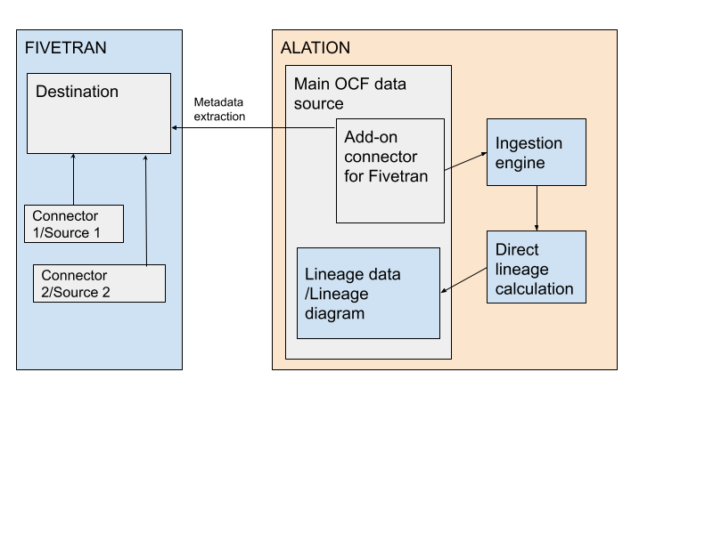

Add-On OCF Connector for Fivetran: Overview¶
Alation Cloud Service Applies to Alation Cloud Service instances of Alation
Customer Managed Applies to customer-managed instances of Alation
Available from Alation version 2023.3.2
Overview¶
The latest Addon OCF connector for Fivetran is available for download from the Connector Hub on Alation Customer Portal. Ask an Alation admin with access to Customer Portal to download the connector from the Connectors section (Customer Portal > Connectors).
The connector for Fivetran is an add-on connector and cannot be used as a standalone connector to catalog a data source. You additionally configure the Fivetran connector for an existing data source cataloged using another—main—OCF connector.
The main data source will represent a Fivetran destination. When you extract metadata from the main (destination) data source, Alation will also extract metadata from Fivetran with a dependent, or downstream, extraction job. Based on metadata from Fivetran, Alation will generate upstream lineage information providing you with an insight into the sources of data in the destination database.
{kind=link}
Note
The Fivetran OCF connector does not extract metadata for data transformations. It only retrieves source metadata, cataloging the Extract - Load stage of the ELT pipeline. To extract metadata for transformations, you can additionally install and configure the dbt OCF connector (paid feature) if dbt is in use in your ELT application stack.
Team¶
You may need the assistance of your database administrator to configure this data source.
Fivetran administrator:
Generates API credentials to access the Fivetran API from Alation.
Provides destination names and source connection details.
Alation Server administrator:
Installs the add-on OCF connector for Fivetran.
Enables and configures extraction from Fivetran in the settings of the main (destination) data source. For more information, see Enable Fivetran Add-On Connector.
Configures lineage in the settings of the source data source.
Scope¶
The table below describes which metadata objects are extracted by the connector and which catalog functionality is supported.
Feature |
Scope |
Availability |
|---|---|---|
Authentication |
||
API key and secret |
Basic authentication using an API access key and secret |
Yes |
Metadata Extraction (MDE) |
||
Default MDE |
Extraction of metadata from Fivetran as a downstream job during metadata extraction from the main data source (destination) |
Yes |
Custom query-based MDE |
Extraction of metadata based on extraction queries provided by user |
Not applicable |
Catalog Features |
||
Sampling and profiling |
Not applicable |
|
QLI |
Not applicable |
|
Compose |
Not applicable |
|
Lineage |
||
Direct lineage |
Auto-calculation of source lineage based on metadata extracted from Fivetran |
Yes |
Table-level lineage |
Calculation of lineage data at the table level |
Yes |
Column-level lineage (CLL) |
Calculation of lineage data at the column level |
Yes |
Transformations metadata |
Extraction of transformation information from Fivetran |
No |
Supported Fivetran Sources¶
The table below lists OCF data sources that support the Fivetran connector. In Fivetran, these data sources correspond to sources. They are based on the metadata streamed with source information using Fivetran metadata APIs and are able to generate Lineage charts. In addition, they are able to extract and catalog within Alation as Source (Fivetran connected source) datasource.
OCF Connector |
Database |
Implementation |
Supported from Fivetran OCF connector version |
|---|---|---|---|
PostgreSQL OCF connector |
PostgreSQL |
Generic |
2.0.6 |
Snowflake OCF connector |
Snowflake |
n/a |
2.0.6 |
SQL Server OCF connector |
SQL Server |
Generic |
2.0.6 |
Supported Fivetran Destinations¶
The table below lists OCF data sources that support the Fivetran connector. In Fivetran, these data sources correspond to destinations.
In Alation, they can be considered “main” data sources that support additional extraction from Fivetran as part of metadata extraction.
Note
After enabling the Enable Fivetran Add-On Connector and installing the Fivetran add-on connector, you will see a toggle to enable extraction from Fivetran on the General Settings tab of the settings for each data source in the table below. Find the details for configuring extraction from Fivetran in Configure Fivetran Add-On for a Data Source.
OCF Connector |
Database |
Implementation |
Supported from Fivetran OCF connector version |
|---|---|---|---|
Azure Synapse OCF connector |
Azure Synapse Analytics |
n/a |
2.0.6 |
AWS Databricks OCF connector |
Databricks on AWS |
AWS* |
2.0.6 |
BigQuery OCF connector |
Google BigQuery |
n/a |
2.0.6 |
MySQL OCF connector |
MySQL |
Generic |
2.0.6 |
PostgreSQL OCF connector |
PostgreSQL |
Generic |
2.0.6 |
Redshift OCF connector |
Amazon Redshift |
n/a |
2.0.6 |
Snowflake OCF connector |
Snowflake |
n/a |
2.0.6 |
SQL Server OCF connector |
SQL Server |
Generic |
2.0.6 |
Azure Databricks and Databricks on Google Cloud OCF implementations have not been certified by Alation yet.
Supported Fivetran Connectors¶
Alation currently supports Fivetran sources, or connectors, of type database. Applications, files, events, and functions are not supported. During extraction from the main data source, Alation will match the connector metadata from Fivetran to the metadata under the source data source in Alation or create temp objects on Lineage diagrams if metadata cannot be matched.
Use of Fivetran API¶
The Fivetran add-on connector relies on the Fivetran metadata API to retrieve metadata into Alation.
Refer to the table below for information about which API methods are used by the connector.
API |
API Endpoint |
Description |
|---|---|---|
Group management |
Fetch all groups accessible by the administrator credentials |
|
Connector management |
https://api.fivetran.com/v1/groups/{group_id}/connectors |
Fetch all source connectors for group_id |
https://api.fivetran.com/v1/connectors/{connector_id} |
Fetch source connector information based on connector_id |
|
Destination management |
https://api.fivetran.com/v1/destinations/{destination_id} |
Fetch destination information based on destination_id |
Metadata management |
https://api.fivetran.com/v1/metadata/connectors/{connector_id}/schemas?limit=10000 |
Fetch schema objects for a given connector_id with the default pagination limit of 10,000 |
https://api.fivetran.com/v1/metadata/connectors/{connector_id}/tables?limit=10000 |
Fetch table objects for a given connector_id with the default pagination limit of 10,000 |
|
https://api.fivetran.com/v1/metadata/connectors/{connector_id}/columns?limit=10000 |
Fetch column objects for a given connector_id with the default pagination limit of 10,000 |
Limitations¶
Fivetran metadata API response only contains metadata for tables that have been synced to the destination. If a table is not present in Fivetran, it will not be present in Alation either.
Fivetran does not sync views from sources to the destination.
The Fivetran OCF connector does not remove renamed or deleted metadata objects automatically. Fivetran schema changes should be followed by rerunning metadata extraction on the source and destination data sources to retrieve the latest state of the metadata.
A Fivetran metadata APIs response can contain soft-deleted metadata objects. If these objects are still present in the catalog, you will see lineage for these objects. It’s the responsibility of Data Source Admin to monitor Fivetran schema changes and rerun MDE in Alation when such changes occur.
Known Issues¶
Metadata objects containing backslash in names are shown as temporary (TMP) objects on the Lineage chart.
Metadata objects (tables and columns) deleted from the source data source are not marked as temporary (TMP) when viewed from the main (destination) data source. However, if you select such an object on the Lineage diagram, the corresponding catalog page in the preview area will show that it has been removed from the catalog.
If some previously cataloged metadata is removed from the main (destination) data source , you will not be able to access lineage for deleted objects from the destination data source. However, on Lineage charts viewed from the source data source, these objects will still be displayed.